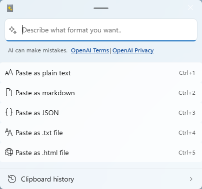
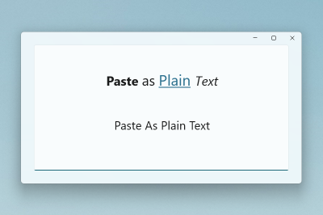
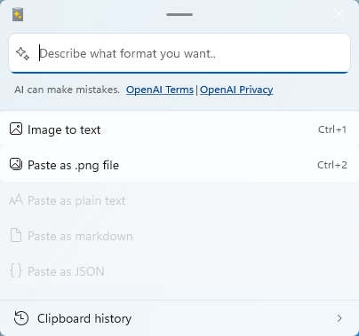
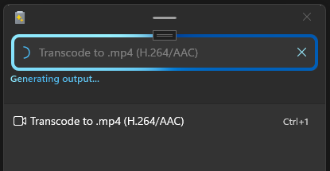
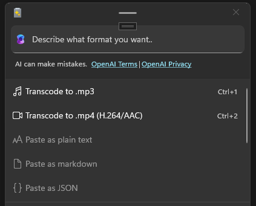

Advanced Paste tool for clipboard management
PowerToys Advanced Paste is a powerful clipboard management tool that transforms your clipboard content into any format you need. This tool enables you to paste content as plain text, markdown, JSON, or various file formats (.txt, .html, .png) using either the interface or keyboard shortcuts. Advanced Paste can extract text from images using local OCR technology and transcode audio/video files to .mp3 or .mp4 formats. All processing happens locally on your machine, with an optional AI-powered feature that requires an OpenAI API key.
Get started with Advanced Paste
Get familiar with the features and capabilities of Advanced Paste.
Enable Advanced Paste
To start using Advanced Paste, enable it in the PowerToys Settings.
Activate the Advanced Paste window
Open the Advanced Paste window with the activation shortcut (default: Win+Shift+V). See the Settings section for more information on customizing the activation shortcut and additional shortcut actions.
Settings
From the Settings menu, the following options can be configured:
| Setting | Description |
|---|---|
| Enable Paste with AI | Enables the AI-powered paste feature. An OpenAI API key is required (requires an account on platform.openai.com). See Paste text with AI for more information. |
| Enable advanced AI | Enables the Advanced AI feature which allows Semantic Kernel to be used to define a chain of actions to be performed when using "Paste with AI". See Paste with Advanced AI for more information. This setting is off and disabled when Enable Paste with AI is disabled. When enabling Enable Paste with AI, Enable advanced AI is also enabled by default, allowing users immediate access to the feature. |
| Clipboard history | Enable to automatically save clipboard history. |
| Automatically close the Advanced Paste window after it loses focus | Determines whether the Advanced Paste window will close after focus is lost from the window. |
| Custom format preview | Enable to preview the output of the custom format before pasting. |
| Actions (Create and manage Advanced Paste custom actions) | When using Paste with AI, save the prompts you frequently use and give them descriptive names, so you can easily select them from the Advanced Paste window without having to type them out. You can also assign each action a keyboard command, so you can execute them without opening the Advanced Paste window. |
| Open Advanced Paste window shortcut | The customizable keyboard command to open the Advanced Paste window. |
| Paste as plain text directly shortcut | The customizable keyboard command to paste as plain text without opening the Advanced Paste window. |
| Paste as Markdown directly shortcut | The customizable keyboard command to paste as Markdown without opening the Advanced Paste window. |
| Paste as JSON directly shortcut | The customizable keyboard command to paste as JSON without opening the Advanced Paste window. |
| Additional actions | Image to Text | Turn on/off the Image to text paste action and configure the customizable keyboard command. |
| Additional actions | Paste as file | Turn on/off the set of Paste as File actions which include Paste as .txt file, Paste as .png file, Paste as .html file. Optionally configure the customizable keyboard command for each of these actions. |
| Additional actions | Transcode audio / video | Turn on/off both the Transcode audio and video paste actions. The transcode settings are all enabled by default. |
| Additional actions | Transcode to .mp3 | Turn on/off the Transcode to .mp3 paste action and configure the customizable keyboard command to transcode audio or video on the clipboard without opening the Advanced Paste window. |
| Additional actions | Transcode to .mp4 (H.264/AAC) | Turn on/off the Transcode to .mp4 (H.264/AAC) paste action and configure the customizable keyboard command to transcode video on the clipboard without opening the Advanced Paste window. |
Important
It's possible to set Ctrl+V as an activation shortcut. This is not recommended, as overriding this shortcut may have unintended consequences.
Advanced text paste
Advanced Paste includes several text-based paste options. These options are available in the Advanced Paste window, which can be opened using the activation shortcut. You can also use the customizable keyboard commands to directly invoke a paste action with quick keys.

Paste as Plain Text
Paste as Plain Text enables you to paste text stored in your clipboard, excluding any text-formatting, using a quick key shortcut. Any formatting included with the clipboard text will be replaced with an unformatted version of the text.

Note
Paste as Plain Text is a feature that runs locally and doesn't use AI.
Paste as JSON
Paste as JSON enables you to paste text stored in your clipboard, updating any text-formatting to JSON, using a quick key shortcut. Any formatting included with the clipboard text will be replaced with a JSON formatted version of the text.
Sample input:
<note>
<to>Mr. Smith</to>
<from>Ms. Nguyen</from>
<body>Do you like PowerToys?</body>
</note>
JSON output:
{
"note": {
"to": "Mr. Smith",
"from": "Ms. Nguyen",
"body": "Do you like PowerToys?"
}
}
Note
Paste as JSON is a feature that runs locally and doesn't use AI.
Paste as Markdown
Paste as Markdown enables you to paste text stored in your clipboard, updating any text-formatting to markdown, using a quick key shortcut. Any formatting included with the clipboard text will be replaced with a markdown formatted version of the text.
Sample input:
<b>Paste</b> <i>as</i> <a href="https://en.wikipedia.org/wiki/Markdown">Markdown</a>
Markdown output:
**Paste** *as* [Markdown](https://en.wikipedia.org/wiki/Markdown)
Note
Paste as Markdown is a feature that runs locally and doesn't use AI.
Paste as .txt file
Paste as .txt file enables you to paste text stored in your clipboard as a .txt file with an auto-generated file name. You can optionally set a quick key shortcut in settings.
Sample input:
Hello World!
If pasting files is accepted within the application that you are using (e.g. File Explorer), then the paste as .txt file action will take the input text and paste a .txt file.
Note
Paste as .txt file is a feature that runs locally and doesn't use AI.
Paste as .html file
Paste as .html file enables you to paste html data stored in your clipboard as a .html file with an auto-generated file name. This is especially useful for saving a part of a webpage from a browser - including links, formatted text and images. You can optionally set a quick key shortcut in settings.
If pasting files is accepted within the application that you are using (e.g. File Explorer), then the paste as .html file action will take the input data and paste a .html file.
Note
Paste as .html file is a feature that runs locally and doesn't use AI.
Paste text with AI
When you paste text with AI, the text is analyzed and formatted based on the context of the text and the prompt provided to the OpenAI call. This feature requires that an OpenAI API key be provided in the PowerToys settings, and that you have available credits in your account.
Note
If you use this feature and see an error API key quota exceeded, that means you do not have credits in your OpenAI account and would need to purchase them.
Some examples of how this feature can be used include:
- Summarize text: Take long text from the clipboard and ask the AI to summarize it.
- Translate text: Take the text from the clipboard in one language and ask the AI to translate it to another language.
- Generate code: Take a description of a function from the clipboard and ask the AI to generate the code for it.
- Transform text: Take text from the clipboard and ask the AI to rewrite it in a specific style, such as a professional email or a casual message.
- Stylize text: Take text from the clipboard and ask the AI to rewrite it in the style of a well-known author, book, or speaker.
You could ask the AI to paste the text as if it were written by Mark Twain or Shakespeare, for example, or to summarize a long case study. The possibilities are endless.
Sample input:
The new Advanced Paste feature in PowerToys is now available. You can use it to save time and improve your writing.
AI output when prompting to "Format the text as if it were written by Mark Twain":
Say, have you heard the news? The newfangled Advanced Paste feature in PowerToys is finally here! It's a nifty tool that's sure to save you time and spruce up your writing. If you're in the market for a bit of writing wizardry, this here Advanced Paste just might be the ticket for ya.
Note
As with any AI tool, the quality of the output is dependent on the quality of the input. The more context you provide, the better the AI will be able to understand and respond to your request. Be sure to carefully review the output before using it. Please see OpenAI's privacy and terms pages for more info on AI usage in this feature.
Paste with Advanced AI
This feature uses Semantic Kernel to allow you to define a chain of actions to be performed when using "Paste with AI". Using this feature you can:
- Work with non-text input such as images.
- Produce non-text output like files.
- Chain multiple actions together and execute them in sequence. For example, Image to text --> Text to JSON text --> JSON text to .txt file.
- Produce meaningful AI-generated error messages.
For these example commands, assume there is an image in the clipboard that contains some text that you would like to save to a text file in another language. You can phrase multiple steps explicitly:
Convert this image to text using OCR, translate the text to French, and then save the text as a .txt file.
Or you can phrase the steps to be more implicit:
Translate to French and save as a .txt file.
Advanced image paste
Advanced Paste includes several image-based paste options. These options are available in the Advanced Paste window, which can be opened using the activation shortcut. You can optionally set a quick key shortcut in settings.

Paste Image to text
Paste image to text enables you to extract the text from an image in your clipboard and quickly paste the extracted text, using a quick key shortcut.
Note
Paste as Image to text is a feature that runs locally using local OCR.
Paste as .png file
Paste as .png file enables you to quickly paste an image format, like a bitmap, to a .png file. You can optionally create a quick key shortcut to invoke this paste action.
Note
Paste as .png file is a feature that runs locally and doesn't use AI.
Transcode to audio / video
Two paste options that work with media files are available in the Advanced Paste window. These options are available in the Advanced Paste window, which can be opened using the activation shortcut. You can also use the customizable keyboard commands to directly invoke a paste action with quick keys. To the extent possible, quality settings (e.g. video dimensions, audio bitrate) from the source file are maintained, as is any container metadata (e.g. title, album).
Paste actions are also cancellable via a cancel (X) button:

This is useful for media transcoding but also for other potentially long-running actions such as the Paste with AI operations.
Paste actions for transcoding display their fractional progress via a progress-ring - this may be useful for other paste actions in future, but is for now only used by media transcoding.
The Windows.Media.Transcoding APIs are used in transcoding the audio and video files. The list of supported codecs can be found here.
Note
The Transcode to audio / video features run locally and don't use AI.
Transcode to .mp3
The Transcode to .mp3 feature works with both audio and video files. It extracts the audio channel from the media on the clipboard and saves it as an .mp3 file.

This feature could be used to extract audio from combined audio/video files to save disk space and to work with audio-only apps and devices.
Transcode to .mp4 (H.264/AAC)
The Transcode to .mp4 (H.264/AAC) feature transcodes video files to use the H.264 video codec and AAC audio codec (if audio is present) and saves the streams to an .mp4 file. This feature is useful for transcoding existing video files to a more widely supported format.
Install PowerToys
This utility is part of the Microsoft PowerToys utilities for power users. It provides a set of useful utilities to tune and streamline your Windows experience for greater productivity. To install PowerToys, see Installing PowerToys.